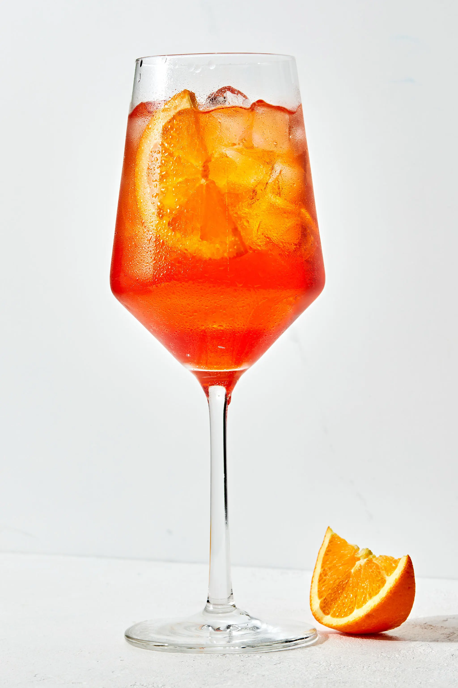

Aperol Spritz

Description
The perfect cocktail that combines sweet and bitter and will make you feel like you're transported to Italy!
Ingredients
- 3 ounces Aperol
- 3 ounces Prosecco
- 1 ounce club soda or unflavored sparkling water
- Orange slice, for garnish
- Ice
Steps
- Add ice to a wine glass until nearly full.
- Pour in the Aperol
- Pour in the Prosecco and top with club soda or sparkling water
- Garnish with an orange slice and enjoy!
Notes
To make it less bitter: use less Aperol and more Prosecco
To make it less boozy: use more club soda